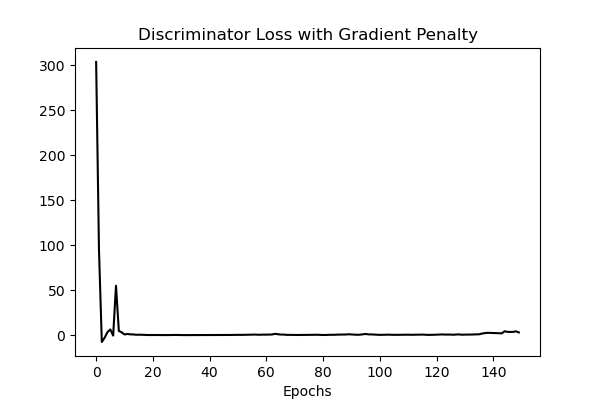

This project seeks to rely on recent deep learning and technical analysis advancements to generate predictions of short term price movements for the Apple stock, $AAPL.
Please check out the links below for the full paper and the project website.
Full Paper
Project Website
Abstract
With this paper, we detail our proposal in using state-of-the-art machine learning advancements to forecast stock price movements for $APPL. Machine learning has taken foothold at the forefront of business forecasting research, with many types of models, from LSTMs to GANs, being used for prediction purposes. Over the last few years, these models have seen many incremental improvements, and so should result in more robust and accurate prediction methods. Here we focus on improvements on the traditional GAN model, namely the wGAN-GP, to make closing price predictions on the stock market.
Introduction
Problem Description
With the New York Stock Exchange containing a total global market capitalization of $15 trillion, it is no surprise that both retail and institutional investors have relied on every possible advancement in the digital world to generate stronger returns [3]. As such, to remain a competitive investor in such a highly technologically optimized market, it is crucial that new innovative approaches to investing are made. Ultimately, this has led to an open market today where 90% of all short term trades and 50-70% of all trades are completed by stocking trading algorithms [3]. Primarily, these computer generated trades rely on technical analysis, which avoid traditional fundamental methodologies, and instead rely on past trading activity, price changes of a security, and patterns in charts to develop valuable indicators for a given security’s future price movements.
Our solution proposal seeks to rely on recent deep learning and technical analysis advancements to generate predictions of short term price movements for a specific equity holding. Our model will rely on an ensemble approach by combining analysisfrom a Wasserstein Generative Adversarial Network (wGAN) and the pretrained Valence Aware Dictionary for Sentiment Reasoning (VADER) model to generate our prediction process. The wGAN serves as a stable learning model during gradient descent, while avoiding convergence failures and mode collapse. This model will serve as a generator that will utilize two key data points for prediction, correlated assets and technical analysis. This model will serve in conjunction with VADER, which will offer sentiment analysis of discussion of the chosen security, determining whether posts are positive, neutral, or negative. Ultimately, we seek to rely on each of these models to offer an alternative to human based decisionmaking for short-term trading and instead create automated and successful predictions to stock price movements.
Motivation
Accurate forecasting of the stock market can be greatly beneficial for a variety of persons. Politicians and government officials would be able to leverage this forecasting to predict the future health of the economy. And with such predictions, they would be able to enact policy to counteract problematic trends, leading to more stable economic growth on a national level. Investors would be able to better profit from trades, generating wealth and more stable income from the stock market. Businesses and corporations could even use this forecasting information for more accurate quarterly performance reviews to assess projected success.
These are just a few of the possible benefits to motivate a project around improving current state-of-the-art stock market prediction models. This just touches the surface of what is possible here. With this data, anyone could be able to achieve a greater understanding of the behavior of the stock market, which up until this point has been one of the largest mysteries in finance.
Challenges and Solutions
The primary question is: how can the currently available methods of forecasting the stock market be improved?
Enter artificial intelligence, and more specifically, machine learning (ML) models. With innate abilities to identify patterns, trends, and mostly unnoticeable correlations between data points, ML models are the perfect candidate for such tasks. Recurrent Neural Network (RNN), Long Short-Term Memory (LSTM) [6], Gated Recurrent Unit (GRU) and models have all been used to accurately predict time series data before, so why not extend the ideas to predicting stock market prices? Unfortunately, the stock market is extremely volatile, and as a result, it is quite difficult to forecast. Because of this, searches for more complicated models which accurately assess the vast and obscure trends and patterns of the stock market have heightened in recent years, leading to improvements in GAN models and similar for this use case specifically [5].
Although we have seen improvements in many of these more complicated stock price prediction models, there always remains a lack of assessment of sentiment directly from the public. In the most basic sense, people are the primary cause of stock market movements. With a public mass movement towards selling a specific stock, there is likely a fall in a stock price to follow. Similarly, if more people are willing to purchase a stock than sell it, then an increase in the price is likely to follow. Supply and demand are primary factors in stock price movement. Researchers attempt solving this challenge by scraping news articles from official sources, but oftentimes, sentiment received from official sources differs substantially from the actual sentiment of the public.
To rectify these issues, this project proposes the use of a wGANGP (Gradient Penalty) model fed by analyses of public sentiment gained from social media platforms along with basic and technical indicators associated with a specific stock ($APPL in our case). With data from posts and comments from social media, sentiment can be assessed directly from personal accounts rather than official news outlets, hopefully bypassing media biases which could skew the predicted stock prices. As people more directly influence the stock market, there is definitely a perceived benefit in this approach. Regarding the use of a wGAN-GP model specifically, it has been chosen for its improvements upon a traditional GAN, noting its advantages in training stability and higher likelihood of convergence. This is directly beneficial when using more complex models for the generator and discriminator in the GAN.
Proposed Approach
Problem Definition
Let \(F={f_1, f_2, \cdots , f_n}\) be the set of \(n\) features which will serve as input to the model. These features will include basic indicators (high, low, open, close, volume), sentiment analysis scores, and technical indicators (moving averages, relative strength index, etc.).
Let \(W={w_1, w_2, \cdots , w_n}\) be the set of \(n\) weights which will be updated while training the model. The magnitude of \(n\) will be determined by the feature engineering described in the following section.
The prediction equation will be as follows:
\(stk\_price = F \odot W\)
Where \(stk\_price\) is the predicted closing stock price outputted by the model and \(\odot\) denotes the Hadamard Product (more commonly described as component-wise multiplication).
Project Pipeline Diagram

Pictured above is the complete data pipeline for this project. The data processing and analyses are divided into two subcomponents, one detailing the fundamental analysis and the other detailing the technical analysis. The fundamental analysis includes evaluation of social media sentiment regarding the stock. Posts are scraped from social media outlets, processed via the NLTK Python library, and finally given sentiment scores by the VADER model. The scores for all posts within a day are then averaged. On the technical analysis side, basic indicators are first pulled from TDAmeritrade and used in various ways to compute a large set of technical indicators, including moving averages and similar. The expanded set of indicators will then be fed into an autoencoder model to produce a set of compressed features. After this process, we will have a condensed set of indicators to merge back with the original technical indicator set to feed into the prediction model. Finally, the expanded indicator set and the daily averaged sentiment scores will be merged and fed to the wGAN-GP prediction model. This model will output the predicted closing prices for the stock.
The Dataset
With regards to the fundamental analysis side of the pipeline, tweets mentioning “$AAPL” and “AAPL” are scraped from Twitter. For the technical analysis portion, basic financial data for $AAPL and a number of comparative assets are pulled via the TDAmeritrade API. All data within our dataset spans from 05/09/2013 to 03/31/2023. For purposes of tuning the prediction model, the dataset was split 80:10:10, for the training, validation, and testing sets respectively.
Fundamental Analysis
For sentiment analysis the text extracted from the social media webscraper must be cleaned so that such analysis can be conducted smoothly. Using the Python NLTK library, the text is tokenized and converted into lowercase. Stop-words (unimportant words), such as “the” and “is”, as well as any non-alphanumeric characters are stripped. Finally, the tokens are lemmatized.
The pre-processed text from the Twitter posts is then given a sentiment score by the VADER model. Sentiment scores for each day are averaged, returning a final set of daily averaged sentiments from Twitter regarding.
Technical Analysis
In this project, we will generate new features from the few basic indicators and score the averaged public sentiment score for each day. The basic indicators - high, low, open, close, and volume - will initially be utilized to compute various technical indicators. These technical indicators may include items such as the moving average, Bollinger Band, relative strength index, average directional index, moving average convergence divergence, and many more. Next, these features will be input into a variational autoencoder in order to produce a compressed representation of the input features, denoted as compressed features. The compressed features will be added to the original features to extend the feature space. The variational autoencoder will not be used for dimensionality reduction, as these compressed features will be served to the final model in addition to the original features. This is done in hopes that the compressed features will better highlight stock price movement patterns.
Model Architecture Descriptions
VADER for Sentiment Analysis
VADER from the NLTK Python library will be used to classify our scraped media posts as negative or positive. The VADER model maps lexical features to sentiment scores via a dictionary. It is a rule-based sentiment analysis tool, which is explicitly sensitive to web-based media. Words are identified and marked as positive or negative, and these markings are utilized to compute a polarity score which identifies the overall sentiment of the message. Words with higher negative sentiment are mapped to negative scores of greater magnitude, and vice-versa. The same applies for words viewed as positive.
wGAN-GP for Stock Price Prediction
An improvement upon a traditional wGAN, which enforces a gradient norm penalty in the discriminator in order to achieve Lipschitz continuity, known as wGAN-GP is used for the prediction of the closing price of a stock. wGANs improve upon traditional gans with the use of the Wasserstein distance as the loss function, promoting stability in model training.
GANs are composed of two main components: the generator and the discriminator. The generator will be a traditional LSTM (long short-term memory) network with input units equal to the number of features in the final dataset and 512 hidden units. Finally, there will be one linear layer with a single output detailing the closing price for each day.
The discriminator is a CNN (convolutional neural network), chosen for its ability to extract complex patterns and trends from the dataset. The architecture is as follows, where \(RWS\) denotes the rolling-window size:
- 1-Dimensional Convolutional Layer: \(RWS+1 \rightarrow 32\)
- 1-Dimensional Convolutional Layer: \(32 \rightarrow 64\)
- LeakyReLU Layer
- 1-Dimensional Convolutional Layer: \(64 \rightarrow 128\)
- LeakyReLU Layer
- 1-Dimensional Convolutional Layer: \(128 \rightarrow 256\)
- LeakyReLU Layer
- Linear Layer: \(256 \rightarrow 256\)
- LeakyReLU Layer
- Linear Layer: \(256 \rightarrow 256\)
- Activation Layer
- Linear Layer: \(256 \rightarrow 1\)
This model was tuned with a predefined grid search. Initially, a large set of possible parameters was tested on a small subset of the full dataset. For each incremental step afterwards, the ranges of the hyperparameters were decreased and tested with a larger subset of the dataset. In the final iteration, the model was evaluated on the full dataset.
Experimental Evaluation
Dataset Exploration
Technical Analysis
The primary collection of technical data was derived from the TDAmeritrade API. With the Price History tool, TDAmeritrade would generate a JSON file of the price history for a given symbol over a specified period and frequency. For this project, we collected the daily price history over the last 10 years for our primary stock ($AAPL), comparative assets ($MSFT, $META, $AMZN, and $GOOGL), and an industry index ($SP500). This offered the Date, Open, Close, High, Low, and Volume for each security. From here, a series of technical indicators typically used by day and swing traders were calculated for $AAPL with the existing data. This included metrics such as: Stochastic Oscillators, Relative Strength Index, Simple Moving Averages for Close and Volume, and Moving Average Convergence/Divergence.
Fundamental Analysis
The fundamental analysis portion of this project was primarily based on analyzing the public sentiment of the Apple stock. The initial source of the data was Reddit. Using the PRAW Python library, a Reddit webscraper was built, which parsed the top 10 newest posts of the r/apple subreddit, and gathered the top 50 comments and up to 25 replies per comment. The text content of each post, comment, and reply were collected and then cleaned using the NLTK library. Their sentiment was determined using the VADER model. While this script was fully implemented, there was no way to gather data from previous dates, and therefore was not integrated within the pipeline. The second source of sentiment data was Twitter. Using the Scweet Python library, a script was written which collected up to 100 tweets per day and up to 10 replies per tweet. The only tweets gathered were those that had the keywords “$AAPL” or “AAPL”. The data was collected from January 1, 2013 to March 30, 2023. The same process was used to clean and calculate the sentiment of the tweet text content. Once the sentiment of each day was found, the final dataset was merged with the technical indicator dataset.
Some preliminary visualizations were created to explore the sentiment dataset.

In general, the number of tweets that mention the keywrods has decreased over time. One possible explanation of this is the novelty of the stock has decreased, and the general public has placed its attention in other stocks and securities, such as cryptocurrency.

Over our time frame, the sentiment of the stock has remained generally positive, staying above 0.0 for the grand majority of the time. It can be stated that Twitter users discussing the stock have an overal positive view of the company.

Finally, we were curious to see if there was any correlation between the sentiment of the stock and the percent change in price of a given day. The scatterplot above illustrates that their is no relationship between the two, and can be said to be independent of each other.
Prediction Results
Rolling-windows and Sentiment Analysis
Depicted in the tables below are evaluation metrics of the returned prediction sets for running the wGAN-GP model with 3-day, 5-day, 7-day, and 10-day rolling windows. One table details the performance of the models with the inclusion of sentiment analysis as a feature, and the other without. The evaluation metrics included are: root-mean-square error (RMSE), normalized root-mean-square error (NRMSE), mean-absolute error (MAE), and mean-absolute-percentage error (MAPE). Note that the RMSE values are normalized to the range of the actual closing price range to gain the NRMSE values.
Evaluation Metrics (without Sentiment Scores)
| Rolling-Window Size | RMSE | NRMSE | MAE | MAPE |
|---|---|---|---|---|
| 3-day | 4.616 | 0.092 | 3.632 | 0.024 |
| 5-day | 5.064 | 0.101 | 3.991 | 0.027 |
| 7-day | 5.463 | 0.109 | 4.348 | 0.029 |
| 10-day | 5.841 | 0.117 | 4.611 | 0.031 |
Evaluation Metrics (with Sentiment Scores)
| Rolling-Window Size | RMSE | NRMSE | MAE | MAPE |
|---|---|---|---|---|
| 3-day | 4.401 | 0.088 | 3.447 | 0.023 |
| 5-day | 4.754 | 0.095 | 3.743 | 0.025 |
| 7-day | 5.271 | 0.105 | 4.233 | 0.028 |
| 10-day | 5.411 | 0.108 | 4.329 | 0.029 |
From an initial evaluation, it appears that the inclusion of daily sentiment score averages as a feature to the prediction model resulted in a slight increase in the accuracy of the predicted closing price. With some more calculations, we can quantify this increased accuracy as a percentage, seen in the table below.
Percentage Change in Evaluation Metrics
| Rolling-Window Size | RMSE | NRMSE | MAE | MAPE |
|---|---|---|---|---|
| 3-day | -4.668 | -4.668 | -5.09 | -4.763 |
| 5-day | -6.117 | -6.117 | -6.205 | -6.741 |
| 7-day | -3.511 | -3.511 | -2.633 | -2.400 |
| 10-day | -7.366 | -7.366 | -6.112 | -5.627 |
So, with some final averaging, this gives us an average percentage change of −5.415% for RMSE and NRMSE, −5.010% for MAE, and −4.882% for MAPE when including sentiment scores as a feature in the prediction model.
Conclusively, we see around a 5% more accurate prediction when sentiment analysis is included in the prediction process. This follows with our initial assumptions that public sentiment is beneficial to accurately predicting the stock market’s daily movements. Though it is only a slight increase, it is believed that with better scraping and data-cleaning capabilities, the model could better harness public sentiment for even more accurate predictions. For instance, removing or filtering out more insignificant or misdirecting media posts could better gauge public sentiment for these purposes, likely leading to increased accuracy in the prediction model.
Best Predictions
The best prediction set returned by the model was with a 3-day sliding window, including sentiment scored from Twitter. The model takes 3 days of basic indicators as input and outputs the predicted closing price of the 4th day. After tuning, the following hyperparameters were chosen for their performance on the validation set:
- Batch Size = 65
- Learning Rate = 0.00005
- Critic Training Iterations per Generator Iteration = 5
- Epochs = 150
Additionally, RMSProp, or root-mean-square propagation, was used as the optimization algorithm for the model. Visualizations of the generator and discriminator losses follow.


The discriminator loss appears to converge approximately to 0, while the generator loss appears to converge approximately to 5. These exact values are mostly unimportant. However, it is important to note that, for this dataset, the losses do appear to converge. In prior versions of the model, the losses did not ever converge. This improvement is thought to be due to the implementation of the gradient penalty, in order to enforce the Lipschitz contraint in the discriminator. The usage of the wGAN-GP model’s improvements to training stability and convergence is likely to credit for this result. Evaluation of the model’s stock price predictions are detailed below.

For the training dataset, the model returned predictions with an RMSE of 0.779. The model seems capable of identifying the movement of the stock price and accurately predicting the magnitude of said movement. The inclusion of various technical indicators and sentiment analysis scores improved this greatly from previous iterations of the model.
Regarding the validation and testing datasets, the model returned predictions with an averaged RMSE of 4.401 or 0.088 when normalized to the range of the true closing price values. This is a bit higher than that on the training set, indicating a bit of overfitting in the model. Further tuning may be requiring to hone in on a bettergeneralized model. Despite this, the model still performs well in identifying stock price movements and even comes fairly close to the magnitude of the movement, returning an averaged MAE of 3.447 on these sets.
Taking in the scale of the predicted values, the RMSE appears quite good. Conclusively, the model achieved predictions within an error of about $3.50 or 2.3% off of the actual stock price on average. Although not entirely useful for day trading, this model could prove useful in longer-termed swing trades.
Future Work
Many potential avenues can be explored by future teams wishing to expand upon our project. The biggest improvement would be to modify our data collection scripts and pipeline to implement online learning capabilities. This means that our model will continually collect data every day to further improve its prediction power and avoid degradation. Additionally, while the Reddit webscraper can be easily adapted to continually scrape daily, data going back to 2013 must be collected, which can potentially done by using the Pushshift Reddit API.
The fundamental analysis aspect of our pipeline can be expanded to gather sentiment from other social media platforms, such as Facebook. This would create additional features that the model could use to make better predictions. The model can also be applied to additional stocks and commodities, such as Meta or gold. This would broaden its applicability in the real world.
When we began the project, we initially wanted to make a model that was capable of doing intraday predictions. We ultimately decided to only do daily predictions, since the original approach would require exponentially more data and more computational power. It is definitely possible to create such a model using our current codebase, since the TDAmeritrade API allows for the collection of intraday technical indicators, and the webscraping scripts can be augmented with logic to separate out intraday intervals. Ultimately, a substantial amount of computing resources would be required to achieve such a model.
Conclusion
Through the implementation of a wGAN-GP model and incorporation of sentiment from retail investors, our model was able to yield promising results that may be difficult to rely on for single day trading, yet extremely useful for longer-termed swing trades. As expected from our literature review, the model saw its strongest performance with a 3-day sliding window and the inclusion of sentiment scores from Titter. Ultimately, our final model saw an RMSE of 4.401 and an NRMSE of 0.088, translating to our model achieving predictions within an error of $3.50 or 2.3% off the actual stock price on average.
References
[1] Boris Banushev. 2019. Using the Latest Advancements in Deep Learning to Predict Stock Price Movements. Medium (Jan. 2019).
[2] Badre Labiad, Loubna Benabbou, and Abdelaziz Berrado. 2022. Improving Stock Market Intraday Prediction by Generative Adversarial Neural Networks. (March 2022).
[3] Ragu Moha. 2018. The Bots of Wall Street. Hacker Earth (Jan. 2018).
[4] Ricardo Alberto Carrillo Romero. 2019. Generative Adversarial Network for Stock Market Price Prediction. (2019).
[5] Priyank Sonkiya, Vikas Bajpai, and Anukriti Bansal. 2021. Stock price prediction using BERT and GAN. (July 2021).
[6] Yulian Wen. 2020. Research of Stock Price Prediction Based on PCA-LSTM Model. (April 2020).
Social Media Webscraper
A python script was be developed to scrape data from Twitter. The is script was developed using the Scweet Python library. It searches tweets that mention the keywords “$AAPL” or “AAPL” and collects up to 100 of them for each day. Afterwards, the sentiment of each tweet is determined using VADER. The average sentiment amongst all tweets per day is calculated to get the sentiment of one day.